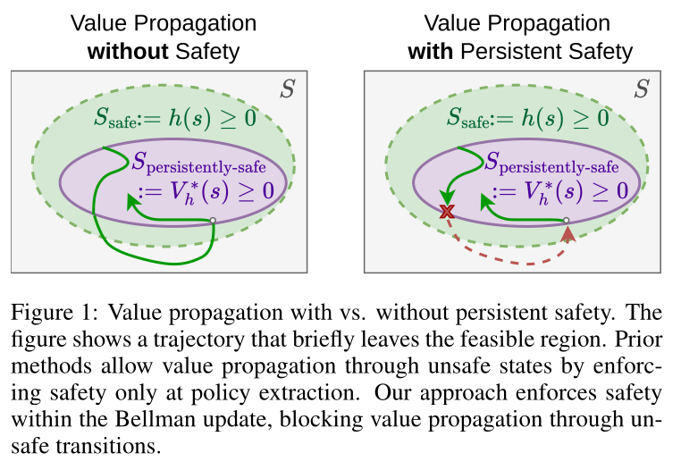
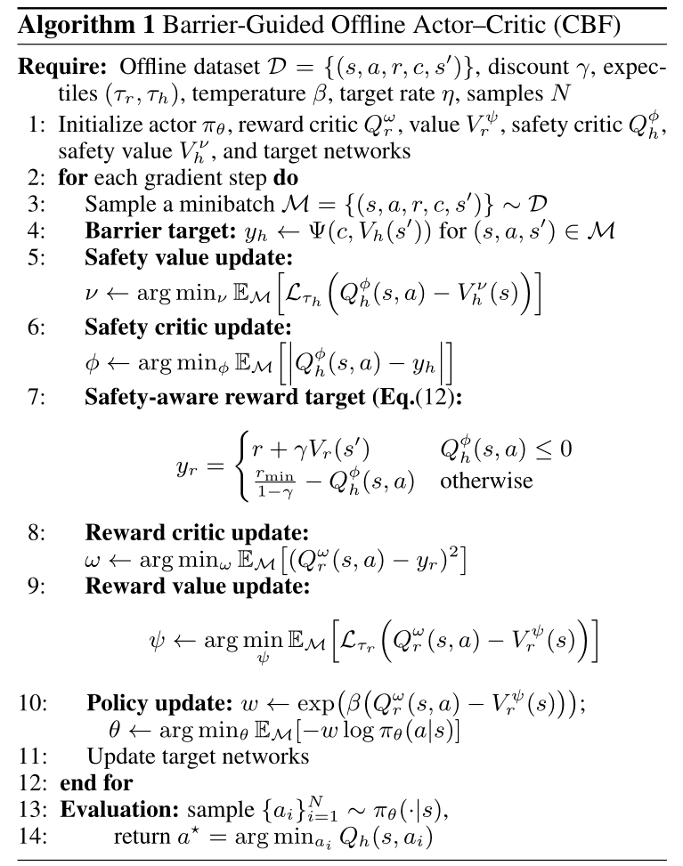
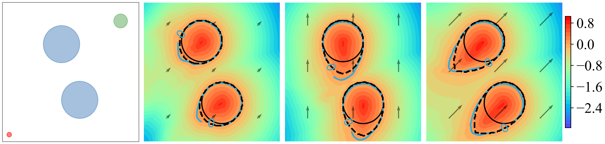
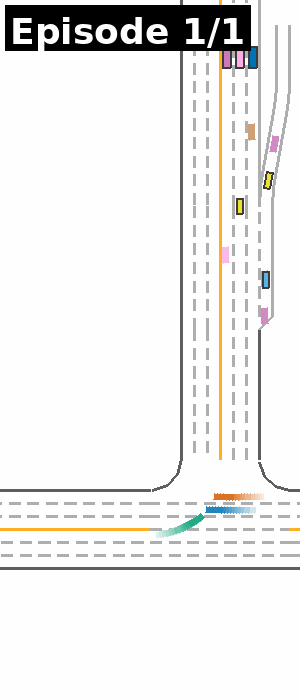

Offline safe reinforcement learning learns high-return policies that satisfy hard safety constraints using only a pre-collected dataset. This setting is challenging due to the inability to explore, and the risk of propagating value errors through unsafe state-space regions. To address this, first, we characterize the safe state region by developing a framework for learning control barrier functions (CBFs) using a novel \textit{generalized Bellman} operator, yielding a \textit{persistent safety set}, from which the agent can remain safe indefinitely. Second, we show that several existing safety set estimation methods (e.g., reachability-constrained RL) can be formulated within our CBF learning framework, highlighting its generality. We further propose a new CBF that ensures safety under environment dynamics uncertainty, unlike standard CBFs designed for deterministic settings. Third, we propose a new reward maximization algorithm that effectively exploits our learned persistent safety set for reward critic estimation. Empirical results on standard benchmarks show that our approach achieves state-of-the-art safety with fewer constraint violations while maintaining competitive returns..

Learned barrier certificates on classic control tasks:

Examples of MetaDrive scenarios:
